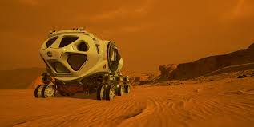
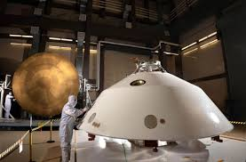

The Technologies
The technologies required for a successful mission to Mars are nothing short of revolutionary, designed to address the unique challenges of traveling and living on another planet. One of the most crucial technologies is propulsion. To reduce the travel time between Earth and Mars, advancements like nuclear thermal propulsion (NTP) and electric propulsion are being developed. These technologies promise to drastically cut travel time, making the journey faster and more efficient, which is key to minimizing radiation exposure and ensuring astronaut health. NTP, in particular, could provide much higher efficiency compared to traditional chemical rockets, offering both greater speed and lower fuel requirements, paving the way for deeper space exploration beyond Mars.Once astronauts arrive on Mars, one of the first technologies that will be necessary is habitat construction. Mars' harsh environment,  including extreme temperatures, a thin atmosphere, and a lack of breathable air, makes creating safe living spaces a major challenge. To solve this, researchers are focusing on innovative construction methods such as using 3D printing to build habitats from local Martian materials. This In-Situ Resource Utilization (ISRU) approach would reduce the need to transport building materials from Earth. Additionally, inflatable habitats that can be easily transported and deployed on Mars are being designed, offering flexibility and ease of setup in a rapidly changing environment. Another essential technology for the Mars mission is life support systems. Maintaining a livable environment during the long journey and on the Martian surface requires advanced systems to provide astronauts with oxygen, clean water, and food. Closed-loop life support systems are being developed to recycle air, water, and nutrients, reducing the dependency on resupply missions from Earth. These systems will also need to deal with waste management, allowing astronauts to live for extended periods without impacting the planet's ecosystem. Moreover, advanced greenhouses could be used to grow food, providing essential nutrients and psychological benefits to the crew.Mars' surface conditions, such as low gravity and extreme temperatures, require advanced spacesuits designed to protect astronauts while allowing them to work outside their habitats.  These suits need to be lightweight, flexible, and capable of withstanding the Martian dust storms and radiation exposure. Scientists are working on new materials that could make spacesuits more durable, while also enhancing mobility for tasks such as mining resources, conducting scientific experiments, and maintaining equipment. Energy generation will also be critical for long-term survival on Mars. Since solar energy is abundant on the Martian surface but intermittent due to dust storms and the planet's day-night cycle, nuclear power is being considered as a reliable energy source. Small modular reactors could provide consistent power for habitats, scientific equipment, and life support systems. Additionally, solar panels that are optimized for Mars’ unique conditions will be essential to supplement energy needs during periods of sunlight.Lastly, robotics and artificial intelligence (AI) will play a vital role in assisting astronauts and conducting tasks that are too dangerous, complex, or time-consuming for humans. Autonomous robots equipped with AI will help with tasks like exploring the Martian surface, conducting scientific experiments, building infrastructure, and even performing repairs. Robots will be able to gather data and samples, provide real-time feedback, and even work in collaboration with astronauts to ensure mission success. In addition, AI will help optimize resources, manage systems, and provide guidance in emergency situations, further enhancing the safety and efficiency of the mission.These technologies are just a glimpse of what will be needed to make human life on Mars a reality. They represent the cutting edge of engineering and innovation, and will undoubtedly lay the foundation for future missions to Mars and beyond.